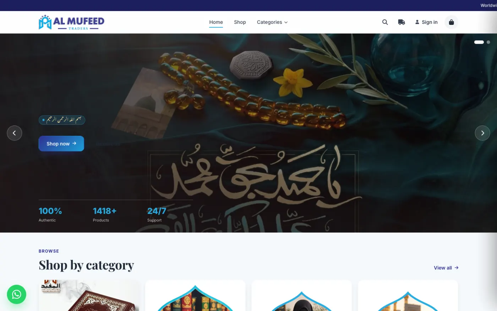
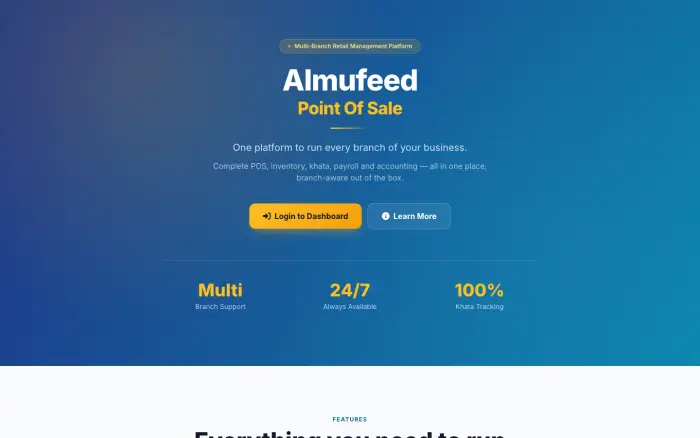

Almufeed Traders: online store and multi-branch point of sale
- Problem
- A retailer selling books, Qurans, fragrances and more needed to sell online and run several physical branches, with stock, credit and accounts in one place instead of spread across registers and notebooks.
- The system
- Two Laravel applications. The storefront handles a catalogue of more than 1,400 products across categories with a live cart. The POS covers barcode checkout with tier and weight-based pricing and thermal receipts, per-branch stock with low-stock alerts, a khata credit ledger with limits and due dates, payroll and accounting.
- Key challenges
- Making every record branch-aware while letting one account switch between branches, keeping an auditable stock history, and modelling the local khata credit practice with statements and overdue tracking. Excel import and export and barcode generation ease migration from existing records.